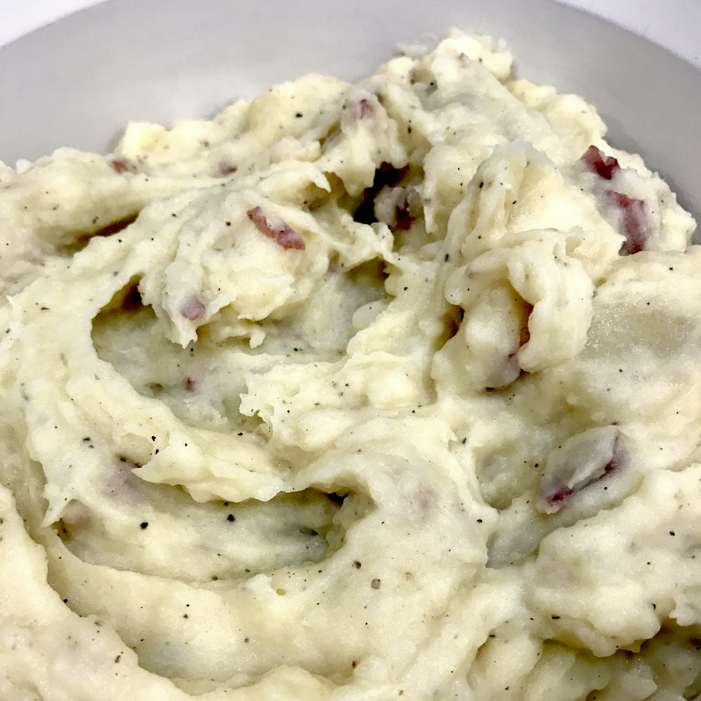

Garlic Mashed Potatoes

Mashed Potatoes
Garlic Mashed potatoes recipe reverse engineered from a certain Italian restaurant. This recipe for 100 servings, I usually cut it down to 10 servings (1 5lb bag of potatoes). I guarantee that these are the best potatoes you've ever tasted.
Ingredients
- 50 pounds unpeeled red potatoes, quartered
- 8 pounds butter, room temperature
- 3 pounds Romano cheese, grated
- 3 cups chopped garlic
- ½ cup salt
- ½ cup dried oregano
Steps
- Bring a large pot of salted water to a boil. Add potatoes and cook until tender but still firm, about 45 minutes; drain. Stir in butter, cheese, garlic, salt and oregano. Mash with a potato masher or with an electric mixer.
Home